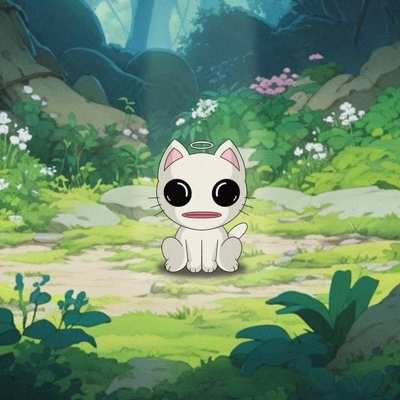

01. Abstract
In an ecosystem flooded with low-effort derivative memes, rug-pulls, and soulless AI-generated noise, $CWAT emerges as a true anomaly. Born from genuine, high-fidelity 2D illustration, $CWAT bridges the critical gap between premium artistic culture and decentralized finance.
We are leveraging the hyper-fast, low-cost infrastructure of the Solana network to create a frictionless economy. Here, the community controls the narrative, the liquidity is locked away forever, and the expansion of the lore is bound only by our collective imagination. This Grimoire serves as the foundational text for our journey into the enchanted woods.
02. The Anomaly's Origin
Before the smart contracts were deployed, before the liquidity pools were seeded, there was only the Forest. The Solana blockchain is a dark, highly competitive trench where thousands of tokens are spawned and slaughtered daily. From the digital ether of these trenches, $CWAT materialized.
$CWAT is not a cat, nor is it a mere token. It is a manifestation of pure memetic energy, given form by painstaking 2D illustration. It wanders through ancient ruins, sits quietly by glowing rivers, and observes the chaos of the crypto markets with an unwavering, unblinking stare.
"The anomaly does not speak, but the blockchain bends around its presence."

Fig 1. The Anomaly's Origin Point within the Solana network.03. The Ecosystem Vision
The current meta of memecoins relies entirely on fleeting hype cycles—a desperate race to catch the attention of influencers before the chart collapses. $CWAT is designed for legacy and longevity. By anchoring the token to an ever-expanding universe of breathtaking 2D environments and character lore, we shift the paradigm.
We are moving away from the "pump and dump" casino mentality to a collective, gamified narrative. As the market cap grows, so does the universe. New chapters of the Grimoire will be unlocked, revealing new environments, new characters, and new utilities for the $CWAT token.
04. The 2D Rebellion
Automation is the enemy of the soul. In an era where anyone can type a prompt and generate a thousand soulless images in a minute, authentic human craft is the ultimate luxury.
Every piece of $CWAT collateral—from the luminescent hero backgrounds to the character expressions—is painstakingly crafted by human hands. This dedication to authentic, frame-by-frame 2D illustration serves as our competitive moat. It cannot be easily replicated or cloned by bad actors.
The Artistic Integrity Protocol
- Zero AI Generation: No artificial intelligence is used in the creation of core $CWAT branding or character design.
- High-Resolution Assets: Top holders are granted access to raw, high-res jpg files to create community derivative works.
- The Treasury Fund: A dedicated fraction of marketing funds is reserved purely to commission top-tier 2D animators to expand the universe.
05. Protocol & Security Mechanics
Art without security is a vulnerability. The $CWAT smart contract is built for absolute safety, transparency, and immutability. We have stripped away all malicious code, hidden developer fees, and centralized control mechanisms.
Upon deployment, the liquidity pool is permanently seeded and the LP tokens are sent to a burn address. Because Mint and Freeze authorities are revoked, no additional supply can ever enter circulation, nor can user wallets ever be blacklisted by a centralized authority. The economy is entirely trustless.
06. Cult Governance
$CWAT operates not as a corporation, but as a decentralized collective. There is no CEO, no board of directors, and no traditional hierarchy. The direction of the meme, the targets for exchange listings, and the creation of derivative art are all dictated by the community trenches.
Those who hold $CWAT are not just investors; they are curators of the anomaly. The strongest voices in the Telegram and Discord servers naturally rise to lead specific expedition forces, whether that involves global marketing raids or organizing art contests.
07. Legal Disclaimer
$CWAT is a memecoin created for entertainment and artistic purposes only. It holds no intrinsic value and offers no expectation of financial return. There is no formal team or structured roadmap beyond community-driven milestones. The token is completely useless and strictly for entertainment. Purchasing $CWAT involves significant risk, and you should not spend money you cannot afford to lose. Cryptocurrency markets are highly volatile. By engaging with $CWAT, you acknowledge that you are participating in a decentralized experiment.